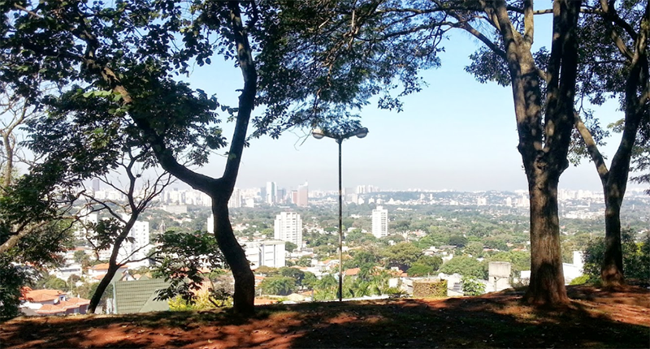
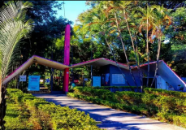
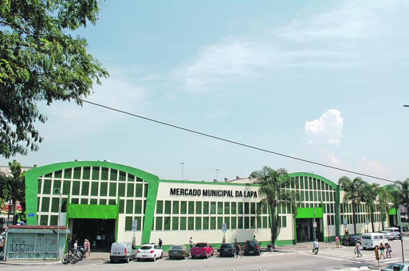
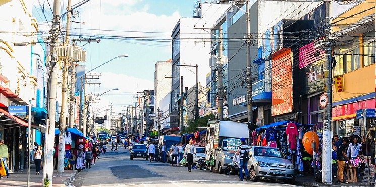
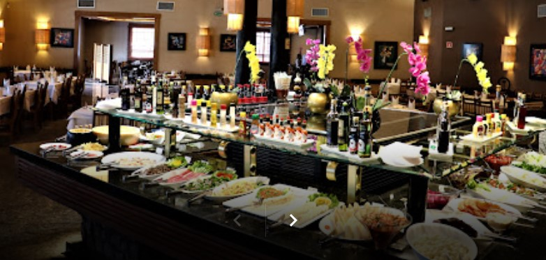

Entretenimento
Natureza e esportes

Praça Weber Azevedo/Mirante da Lapa

Centro Educacional e Esportivo Edson Arantes do Nascimento / Pelezão
Comércio

Mercadão da Lapa

Rua Doze de Outubro
Gastronomia

Bovinu'S Churrascaria